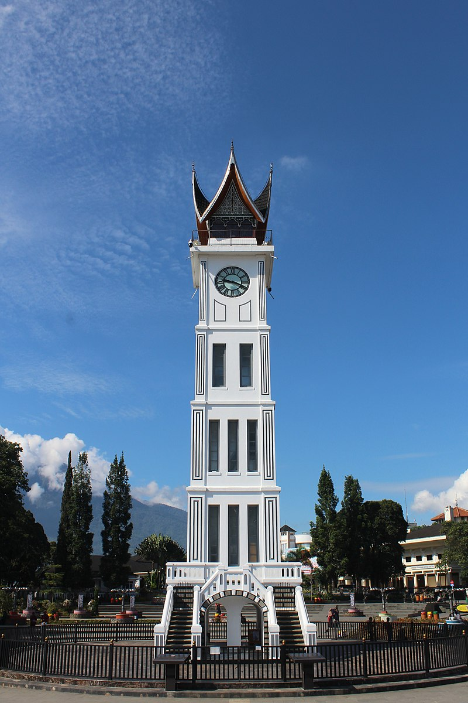
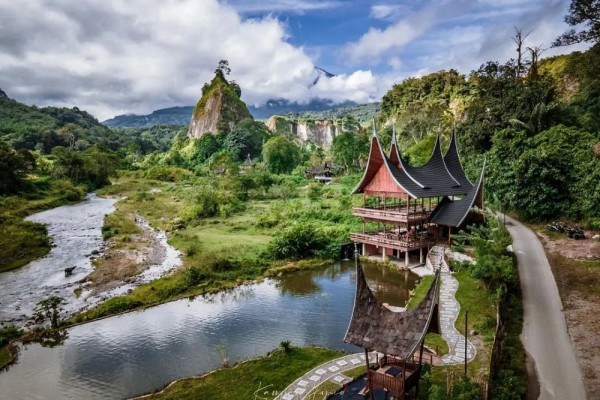
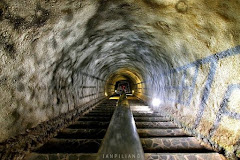
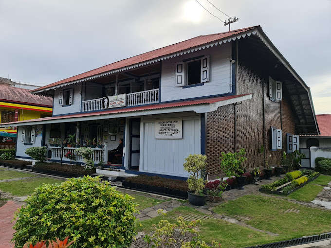
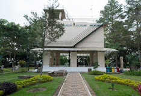
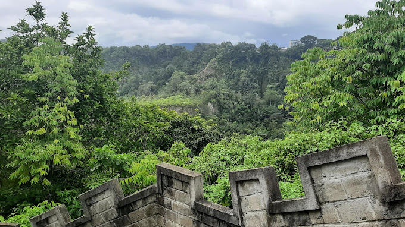

Kota Bukittinggi
Bukittinggi, kota di Provinsi Sumatra Barat, Indonesia, memiliki perekonomian terbesar kedua. Kota ini pernah menjadi ibu kota Indonesia pada masa Pemerintahan Darurat Republik Indonesia dan juga pernah menjadi ibu kota Provinsi Sumatra dan Provinsi Sumatra Tengah.
Wisata
Jam Gadang

Jam Gadang adalah menara jam yang menjadi penanda atau ikon Kota Bukittinggi, Sumatra Barat, Indonesia. Menara jam ini menjulang setinggi 27 meter dan diresmikan pembangunannya pada 25 Juli 1927. Terdapat jam berukuran besar berdiameter 80 cm di empat sisi menara sehingga dinamakan Jam Gadang, sebutan bahasa Minangkabau yang berarti "jam besar".
Jam Gadang menjadi lokasi peristiwa penting pada masa sekitar kemerdekaan Indonesia, seperti pengibaran bendera merah putih (1945), Demonstrasi Nasi Bungkus (1950), dan pembunuhan 187 penduduk setempat oleh militer Indonesia atas tuduhan terlibat Pemerintahan Revolusioner Republik Indonesia (1959).
Ngarai Sianok

Ngarai Sianok merupakan sebuah lembah curam (jurang) yang terletak di perbatasan Kota Bukittinggi, di Kecamatan IV Koto, Kabupaten Agam, Sumatra Barat. Lembah ini memanjang dan berkelok sebagai garis batas kota dari selatan Ngarai Koto Gadang sampai ke nagari Sianok Anam Suku, dan berakhir di Kecamatan Palupuh. Ngarai Sianok memiliki pemandangan yang sangat indah dan juga menjadi salah satu objek wisata andalan provinsi.
Ngarai Sianok yang dalam jurangnya sekitar 100 m ini, membentang sepanjang 15 km dengan lebar sekitar 200 m, dan merupakan bagian dari patahan yang memisahkan Pulau Sumatra menjadi dua bagian memanjang (patahan Semangko). Patahan ini membentuk dinding yang curam, bahkan tegak lurus dan membentuk lembah yang hijau—hasil dari gerakan turun kulit bumi (sinklinal)—yang dialiri Batang Sianok (batang berarti sungai, dalam bahasa Minangkabau) yang airnya jernih. Di zaman kolonial Belanda, jurang ini disebut juga sebagai karbouwengat atau kerbau sanget, karena banyaknya kerbau liar yang hidup bebas di dasar ngarai ini.
Goa Jepang

Lubang Jepang Bukittinggi (juga dieja Lobang Jepang) adalah salah satu objek wisata sejarah yang ada di Kota Bukittinggi, Sumatra Barat, Indonesia. Lubang Jepang merupakan sebuah terowongan (bunker) perlindungan yang dibangun tentara pendudukan Jepang sekitar tahun 1942 untuk kepentingan pertahanan.
Sebelumnya, Lubang Jepang dibangun sebagai tempat penyimpanan perbekalan dan peralatan perang tentara Jepang, dengan panjang terowongan yang mencapai 1400 m dan berkelok-kelok serta memiliki lebar sekitar 2 meter. Sejumlah ruangan khusus terdapat di terowongan ini, di antaranya adalah ruang pengintaian, ruang penyergapan, penjara, dan gudang senjata.
Museum Kelahiran Bung Hatta

Rumah Kelahiran Bung Hatta adalah rumah yang dibangun sebagai upaya mengenang dan memperoleh gambaran tempat Bung Hatta dilahirkan dan menghabiskan masa kecilnya sampi berusia 11 tahun. Selanjutnya Bung Hatta melanjutkan pendidikan menengahnya di Meer Uitgebred Lager Onderwijs (MULO) atau sekolah menengah di kota Padang. Rumah Kelahiran Bung Hatta ini terletak di Jalan Soekarno-Hatta No.37, Bukittinggi, Sumatra Barat.
Rumah ini didirikan sekitar tahun 1860-an dan menggunakan struktur kayu yang terdiri dari bangunan utama, pavilion, lumbung padi, dapur dan kandang kuda serta kolam ikan. Bangunan utama berfungsi untuk menerima tamu, ruang makan keluarga, dan kamar ibu, paman, dan kakek Bung Hatta sedangkan pavilion berfungsi sebagai kamar tidur Bung Hatta.
Benteng Fort De Kock

Fort de Kock adalah benteng peninggalan Belanda yang berdiri di Kota Bukittinggi, Sumatra Barat, Indonesia. Benteng ini didirikan oleh Kapten Bouer pada tahun 1825 pada masa Hendrik Merkus de Kock sewaktu menjadi komandan Der Troepen dan Wakil Gubernur Jenderal Hindia Belanda, karena itulah benteng ini terkenal dengan nama Benteng Fort De Kock.
Benteng yang terletak di atas Bukit Jirek ini digunakan oleh Tentara Belanda sebagai kubu pertahanan dari gempuran rakyat Minangkabau terutama sejak meletusnya Perang Paderi pada tahun 1821-1837. Di sekitar benteng masih terdapat meriam-meriam kuno periode abad ke 19. Pada tahun-tahun selanjutnya, di sekitar benteng ini tumbuh sebuah kota yang juga bernama Fort de Kock, kini Bukittinggi.
The Greatwall of Koto Gadang

Janjang Koto Gadang (Indonesia: tangga seribu) adalah salah satu objek wisata yang terdapat di Ngarai Sianok, Kabupaten Agam, Sumatra Barat. Tangga dan jalan yang bertembok ini melintas mulai dari Koto Gadang di lembah Ngarai Sianok lalu naik ke Bukittinggi. Panjang keseluruhannya kira-kira sepanjang 780 m, lebar jalan 2 m, serta bertembok beton yang bentuknya menyerupai bentuk Tembok Besar Tiongkok. Kira-kira di pertengahan jalan bertembok ini, terdapat sebuah jambatan gantung yang sering disebut Jembatan Merah. Dari ujung ke ujung, perjalanan melintasi tangga dan jalan ini kira-kira memakan waktu 15-30 menit.